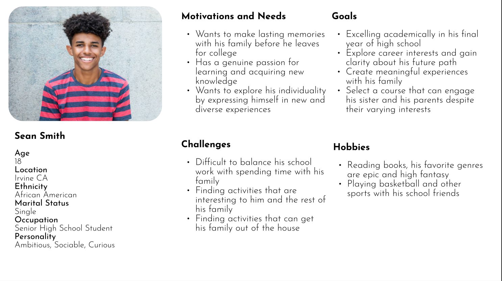

FamConnect: A User-Centered Approach to Family Connection
Tyler Youn - UCLA DH110 Spring 2023
Introduction
Imagine a platform where families can discover fun and dynamic activities and register for them effortlessly. Where selections of classes, courses, and events are curated and presented to users based on preferences and interests. This application aims to make it as easy as possible for a family to discover their next weekend activity in their communities. The following web document includes user research and competitor analysis, as well as storytelling elements, to justify and aid in building a wireflame and flow. It takes a full and complete approach to present a novel design to respond to the design challenge.
Design Statement
I believe that spending quality time by doing a shared and fun activity is an excellent way to bond with family. However, a common problem that emerges is finding and discovering unique and interesting things to do. It is important to bridge the gap between families and groups who are seeking activities, and the unbooked activities and things that are available for them.
In this project, I found that users want a convenient and simple way to be able to register for such courses. Moreover, based on user feedback, providing curated recommendations based on interests and availablity can make it easier and more likely for families to choose a course. I believe that by resolving this issue with my project, it will provide families with hours of new and fun experiences.
Competitor Analysis
Using Nielson's 10 Usability Heuristics for User Interface Design, I evaluated two apps based on their ability to accomplish a core task: register for an in-person/virtual course for a group of two or more family members that share a common interest like painting, yoga, or gardening.

LA County Parks & Recreation

Wondrium App
Heuristic Evaluation
The heuristics revealed some glaring issues for both applications. The LA County app was crowded and filled with walls of text, failing the aesthetic and minimalist design heauristic. The layout of the information, as well as the inconsistency, as they still showed all classes regardless of availability, causes the user to jump from class page to class page even if they are not available for registration. In the same vein, in the Wondrium app, the app was not too flexible and efficient to use, as there was no filter in the home or the search page. The users were just given a large catalogue of classes and told to choose.
From these evaluations, I realized that making the design and layout as simple and clear as possible was important. The user should be able to know the system status, as well as where they are in the process. Finally, I learned that when presenting a catalogue of courses or information, it is important to try to present the most important or relevant listings for the user.
See full heuristic evaluationUsability Testing
I also performed an usability evaluation of the LA County Parks & Recreation web application, in order to reveal issues based on how a user interacts with it. I led a user to find family-friendly activites, filter by schedule, and share course information in real time. From the questionnaire and follow-up questions, I learned that having an intuitive filter feature was important to guiding the desired courses to the user.
See full usability testUser Research
In the previous analysis, we looked at an existing web-application, to evaluate a product based on a user's interactions with it. In this contextual inquiry, we dive deeper into the core tasks and original problems that the LA County Parks & Recreation app was designed to address.
Contextual Inquiry
The focused task that was assigned to the user was:UX Storytelling
To step into the shoes of the target users, we develop personas to understand their motivations, goals, feelings, emotions, and background. Ultimately, we adopt these personas to gain insights from the user's perspective.
Personas + Scenarios
Persona 1
Persona 2
For Pam, the first feature is crucial, as she struggles to find an activity with other apps that could cater to both her children and her parents. With FamConnect she is able to easily create a family profile within minutes.
Sean was also searching for activities for his family, but wanted to avoid generic options like movie and board game nights. The first feature was immensely useful, as it took minimal coordination to find a selection of courses that his family can take. The second feature was also useful, as he did not have to set up multiple profiles for each member of his family, but rather he could just add them to the registration and checkout together.
Low-Fidelity Prototype
I built a simple wireframe and flow based on the results from the previous UX research.
Wireframes and Flows
After creating a wireflow, I asked a participant to test the flow, and to make sure that there were no inconsistencies. From the feedback, I received insight on how to space out the information and present it to the user.
See full low fidelity prototypeWireframes and Graphic Designs
We build upon the wireframe of the lo-fi prototype, and add more details and refine the overall design.
Design System
I looked at three specific graphic design elements: the typeface, color scheme, and layout grid + spacing. For each of my design decisions, I justified according to design principles. For example, I used the WCAG standard to ensure that my selected colors would provide good contrast.